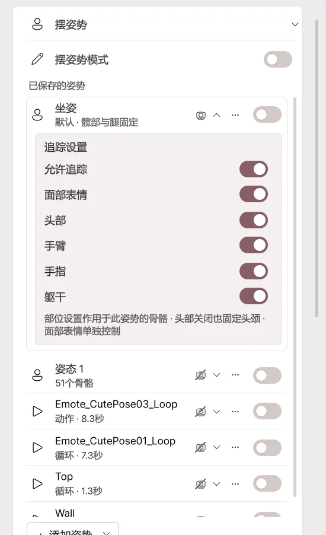
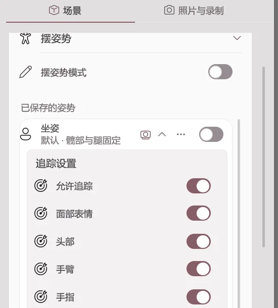
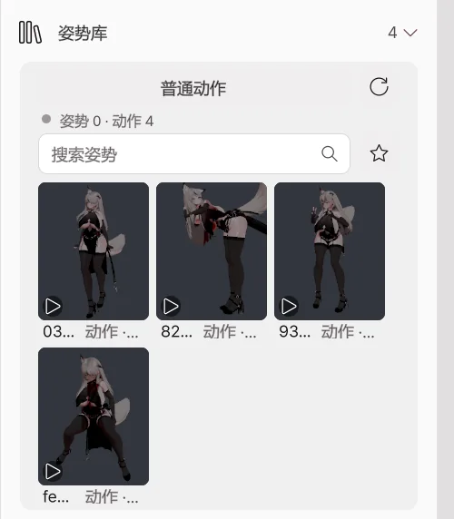
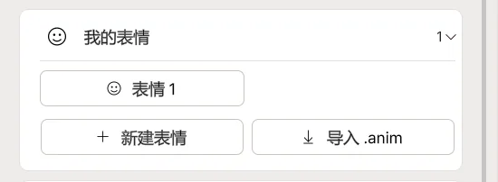
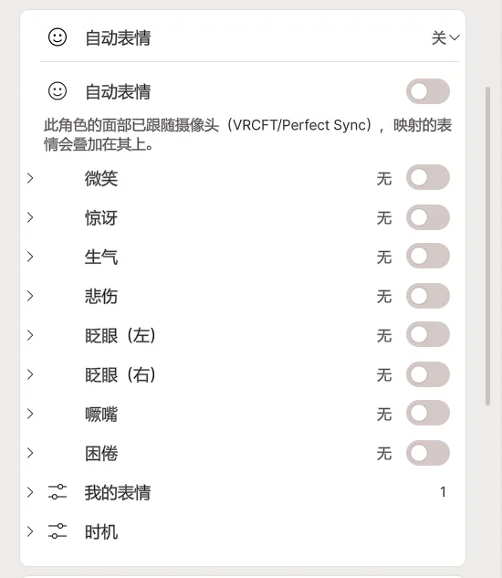

姿势与表情
创建要保存的姿势，并将表情连接到按钮或追踪输入。姿势·姿势库·对象可以在Pro中使用，我的表情·自动表情可以在Basic和Pro中使用。
姿势

- 在工作室 → 在摆姿势中开启摆姿势模式。
- 选择骨骼来拖动旋转环或移动手脚。
- 按完成以保存姿势。
- 在角色菜单的详细卡中应用。
| 操作·按钮 | 结果 |
|---|---|
| 骨骼选择·旋转 | 改变所选关节的方向。 |
| 手·脚 拖动 | 移动端点，使手或脚跟随。 |
| Alt+拖动 | 改变肘部和膝盖所指的方向。 |
| 对称编辑 | 另一边也会一起改变。 |
| 左右翻转 | 改变姿势的左右方向。 |
| 固定 | 阻止选定的骨骼随跟踪和动画移动。 |
| 贴在地板上 | 将脚放平在地板上。 |
| 完成 | 保存制作的姿势。 |
| 丢弃 | 不应用已编辑的姿势直接退出。 |
按姿势跟踪

按姿势侧面的相机按钮可以分别开启或关闭面部、头部、手臂、手指和躯干。
- 点亮的部位：跟随我的动作。
- 熄灭的部位：保持储存的姿势。
- 例：关闭手臂，开启头部·面部时，会保持手臂姿势，同时头部和表情会移动。
基本姿势和待机姿势

| 选择 | 使用时 |
|---|---|
| 基本姿势 | 通常不追踪部分的基准姿势。 |
| AFK 待机姿势 | 当失去追踪时使用的姿势。 |
| 待机表情 | 自动在离开时应用的表情。 |
| 桌面姿势 | 当手不出现在相机画面中时使用的手臂·手姿势。 |
转入待机姿势的时间在 动作 → 失去追踪时 调整。
姿势库

- 打开工作室 → 摆姿势 → 姿势库。
- 选择包含
.anim文件的文件夹。 - 选择姿势缩略图并应用。
- 按解除后会返回。
通过搜索·收藏可以找到经常使用的姿势，并且可以在编辑中在摆姿模式下修正后保存。
对象
在工作室 → 房间和道具中查看布置方法。可以使用文本、图片、图形和 .vprop 3D 模型。
我的表情

- 点击“创建新表情”。
- 调整面部形状键以形成表情。
- 通过预览强度从 0%（无表情）到 100%（完整表情）查看效果。
- 保存。
- 点击“我的表情”图块以应用。
也可以通过加载 .anim 文件添加 Unity 表情动画。动画文件会随时间改变表情，是否循环由文件设置决定。
自动表情

在“动作 → 自动表情”中开启。将微笑、惊讶、眨眼等每种检测到的表情与“我的表情”中保存的表情连接。这样，当你真正微笑或惊讶时，连接的表情会自动出现。